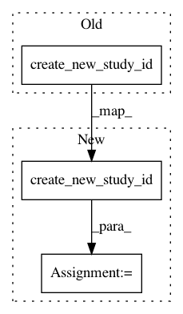

bb93e4992ade815b758b0eb26ae2b4ca614ccc35,tests/storages_tests/test_storages.py,,test_set_and_get_tiral_system_attr,#Any#,456
Before Change
check_set_and_get(trial_id_1, "dataset", "ImageNet")
// Test another trial.
trial_id_2 = storage.create_new_trial_id(storage.create_new_study_id())
check_set_and_get(trial_id_2, "baseline_score", 0.001)
system_attrs = storage.get_trial(trial_id_2).system_attrs
assert system_attrs == {"baseline_score": 0.001}
After Change
// type: (Callable[[], BaseStorage]) -> None
storage = storage_init_func()
study_id = storage.create_new_study_id()
trial_id_1 = storage.create_new_trial_id(study_id)
def check_set_and_get(trial_id, key, value):
// type: (int, str, Any) -> None
storage.set_trial_system_attr(trial_id, key, value)
assert storage.get_trial_system_attrs(trial_id)[key] == value
// Test setting value.
for key, value in EXAMPLE_ATTRS.items():
check_set_and_get(trial_id_1, key, value)
system_attrs = storage.get_trial(trial_id_1).system_attrs
assert system_attrs == EXAMPLE_ATTRS
// Test overwriting value.
check_set_and_get(trial_id_1, "dataset", "ImageNet")
// Test another trial.
trial_id_2 = storage.create_new_trial_id(study_id)
check_set_and_get(trial_id_2, "baseline_score", 0.001)
system_attrs = storage.get_trial(trial_id_2).system_attrs
// TODO(Yanase): Remove number from system_attrs after adding TrialModel.number.
assert system_attrs == {"baseline_score": 0.001, "number": 1}
In pattern: SUPERPATTERN
Frequency: 3
Non-data size: 3
Instances
Project Name: pfnet/optuna
Commit Name: bb93e4992ade815b758b0eb26ae2b4ca614ccc35
Time: 2019-02-25
Author: toshihiko.yanase@gmail.com
File Name: tests/storages_tests/test_storages.py
Class Name:
Method Name: test_set_and_get_tiral_system_attr
Project Name: pfnet/optuna
Commit Name: 003f7465a6bc276ac348453217b5d270399f7128
Time: 2018-04-24
Author: sano@preferred.jp
File Name: tests/storages_tests/test_storages.py
Class Name:
Method Name: test_set_trial_intermediate_value
Project Name: pfnet/optuna
Commit Name: dab306150cbb847b3824452376f6ab0395f9cd09
Time: 2018-08-23
Author: toshihiko.yanase@gmail.com
File Name: tests/storages_tests/test_storages.py
Class Name:
Method Name: test_create_new_study_id_with_name